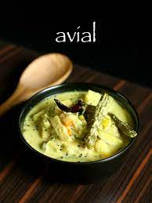

Aviyal

Description
Aviyal - Serves 8
Ingredients
Vegetables
- 1 Kerala Cucumber (Dosakaya)
- 3 green chilli
- 1 Snake Gourd
- ½ tsp Red chilli powder
- 3-4 Carrots
- 2 Drumstick
- ½ tsp turmeric
- 1 Raw Banana
- 20 curry leaves
- Yam
- Salt
- ½ Green Mango
- 20 beans
- 3-4 tbsp coconut oil
Paste
- 2 sambar onions
- Curd (optional)
- ½ cup coconut grated
- ½ tsp jeera
- 2 green chilli
Prep
- Cut all vegetables into finger length pieces
- Grate coconut
Instructions
Vegetables
- Bung all veges except drumstick in a large pan.
- Add as much mango as needed (depending on how sour)
- Add green chillis, turmeric, Red chilli powder, salt, coconut oil, a little water, and let it steam on medium flame covered for 5 minutes.
- Then add drumstick, put on lid and cook, keep mixing.
- Check if tangy enough and add more mango if needed.
- Add salt, keep mixing adding little water at a time. All on low flame.
Paste
- Mixi coarsely, 6 heaped tbsp coconut, jeera, 2 green chillis, onions
- Mixi more coarsely, rest of coconut,
- Bung together
- Once veges cooked, add coconut, with curry leaves, cover for 5 minutes.
- Mix. Add salt to taste.
- Add curd (optionally), and mix.
- Add 1 ½ tbsp coconut oil. Keep covered.
Nutrients
| Carbs |
Protein |
Fat |
Calories |
Fibre |
Sugar |
Sodium |
Calcium |
Sat |
GL |
| (g) |
(g) |
(g) |
(kCal) |
(g) |
(g) |
(mg) |
(mg) |
Fat (g) |
|
| 7.79 |
2.16 |
5.31 |
90.53 |
2.20 |
3.80 |
110.32 |
30.19 |
4.10 |
1.78 |
Back to top of page